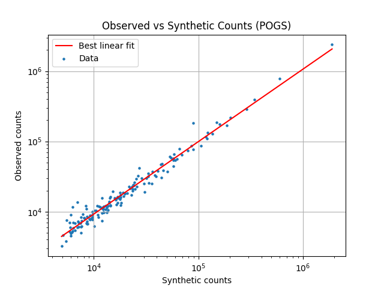
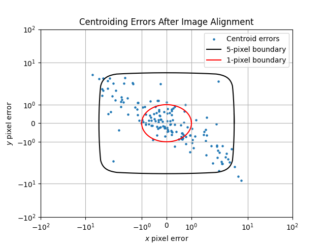

Note
Go to the end to download the full example code.
Synthetic Image Results#
Comparison plots for the synthetic and real images
from types import SimpleNamespace
import matplotlib.pyplot as plt
import numpy as np
import mirage as mr
import mirage.photo as mrp
np.random.seed(2)
info_path = '/Users/liamrobinson/Library/CloudStorage/OneDrive-purdue.edu/pogs/2022/2022-09-18/ObservationData.mat'
add_distortion = True
add_refraction = True
station = mr.Station()
station.telescope.fwhm = 3.5
station.telescope.gain = 5.1
mr.tic('Loading star catalog')
catalog = mr.GaiaSpectralStarCatalog(station, mr.now())
mr.toc()
res = mr.generate_matched_image(
info_path,
200,
station,
catalog,
add_distortion,
add_refraction,
noise=True,
obj_total_brightness=1.818e4,
)
print(res.keys())
print(res['fits_info'])
n = SimpleNamespace(**res)
plt.figure()
plt.plot(n.counts_syn, n.fit_counts_obs_of_syn(n.counts_syn), c='r', markersize=7)
plt.scatter(n.counts_syn, n.counts_obs, s=5)
plt.xlabel('Synthetic counts')
plt.ylabel('Observed counts')
plt.grid()
plt.xscale('log')
plt.yscale('log')
plt.legend(['Best linear fit', 'Data'])
plt.title('Observed vs Synthetic Counts (POGS)')
plt.figure()
plt.scatter(n.err_updated[:, 0], n.err_updated[:, 1], s=5)
plt.yscale('symlog')
plt.xscale('symlog')
t = np.linspace(0, 2 * np.pi + 0.1, 1000)
plt.plot(5 * np.cos(t), 5 * np.sin(t), c='k')
plt.plot(1 * np.cos(t), 1 * np.sin(t), c='r')
plt.legend(
['Centroid errors', '5-pixel boundary', '1-pixel boundary'], loc='upper right'
)
plt.ylim(-100, 100)
plt.xlim(-100, 100)
plt.xlabel('$x$ pixel error')
plt.ylabel('$y$ pixel error')
plt.title('Centroiding Errors After Image Alignment')
plt.grid()
plt.show()
# endd


Loading star catalog: 1.24e+00 seconds
Applying 1.14e-02 deg of refraction
fits_info["integration_time"]=4.0
sim counts are too high by a factor of 1.06
BEFORE QUEST: median error 84.77 pixels
Performing the QUEST fit with 158 stars
Applying a 70.47 arcsecond rotation to the telescope orientation
Look direction: [ 0.15285185 -0.88205489 0.44566297]
Up direction: [0.98453582 0.17497072 0.00862907]
AFTER QUEST: median error 1.14 pixels
Objects in frame 1:
NAVSTAR 80 (USA 309)
Synthesizing CCD Image: 1.70e+00 seconds
dict_keys(['img_syn', 'img', 'fits_info', 'stars_obs', 'expected_stars_corrected', 'counts_syn', 'counts_obs', 'fit_counts_obs_of_syn', 'data_mat', 'err_updated'])
{'ra_initial': array([4.88377607]), 'dec_initial': array([0.46459827]), 'station': <mirage.station.Station object at 0x162af6ed0>, 'dates': array([datetime.datetime(2022, 9, 18, 5, 13, 0, 879000, tzinfo=datetime.timezone.utc),
datetime.datetime(2022, 9, 18, 5, 13, 4, 879000, tzinfo=datetime.timezone.utc)],
dtype=object), 'date_mid': datetime.datetime(2022, 9, 18, 5, 13, 2, 879000, tzinfo=datetime.timezone.utc), 'look_dirs_eci': array([[ 0.15247134, -0.88090375, 0.44806369],
[ 0.15279705, -0.88059979, 0.44854996]]), 'look_dir_eci_mid': array([[ 0.1526342 , -0.88075182, 0.44830685]]), 'ccd_adu': array([[1066, 1059, 1035, ..., 1060, 1050, 1041],
[1055, 1051, 1049, ..., 1044, 1054, 1041],
[1028, 1038, 1033, ..., 1040, 1047, 1056],
...,
[1026, 1040, 1002, ..., 1056, 1019, 1038],
[1024, 1033, 1003, ..., 1046, 1033, 1044],
[1020, 1027, 1030, ..., 1034, 1040, 1043]], dtype=uint16), 'br_parabola': array([[1018.50497038, 1018.50502394, 1018.50504757, ..., 1018.4984989 ,
1018.49847569, 1018.4984231 ],
[1018.50502394, 1018.50507749, 1018.50510113, ..., 1018.49855191,
1018.4985287 , 1018.4984761 ],
[1018.50504757, 1018.50510113, 1018.50512477, ..., 1018.49857531,
1018.49855209, 1018.4984995 ],
...,
[1018.4984989 , 1018.49855191, 1018.49857531, ..., 1018.49209277,
1018.49206979, 1018.49201775],
[1018.49847569, 1018.4985287 , 1018.49855209, ..., 1018.49206979,
1018.49204683, 1018.49199478],
[1018.4984231 , 1018.4984761 , 1018.4984995 , ..., 1018.49201775,
1018.49199478, 1018.49194274]]), 'airmass': 1.3733946736379, 'total_pix_tracked': np.float64(187.5251659334518), 'ccd_temp': -20.0, 'center_elevation_rad': np.float64(0.8155672038870313), 'integration_time': 4.0, 'ra_rate': 21.5079697, 'dec_rate': 28.0521493, 'ra_mid': array([4.88398459]), 'dec_mid': array([0.46487028])}
Overlaying the two images
# mrp.plot_fits(n.img_syn)
# plt.show()
# Background subtraction
n.img, br_map_real, br_mask_real, br_std_img = mrp.background_subtract(
n.img,
reduction_factor=1,
sigma=3.0,
box_size=100,
)
n.img_syn, br_map_synth, br_mask_synth, br_std_synth = mrp.background_subtract(
n.img_syn,
reduction_factor=1,
sigma=3.0,
box_size=100,
)
print(f'Standard deviation of the background (observed): {br_std_img:.2f}')
print(f'Standard deviation of the background (synthetic): {br_std_synth:.2f}')
np.savez(
'/Users/liamrobinson/Documents/maintained-research/mirage/examples/14-digital-twin-2024/data/pogs.npz',
img=n.img,
img_syn=n.img_syn,
br_std_img=br_std_img,
br_std_synth=br_std_synth,
)
Standard deviation of the background (observed): 10.40
Standard deviation of the background (synthetic): 10.95
Total running time of the script: (0 minutes 11.507 seconds)